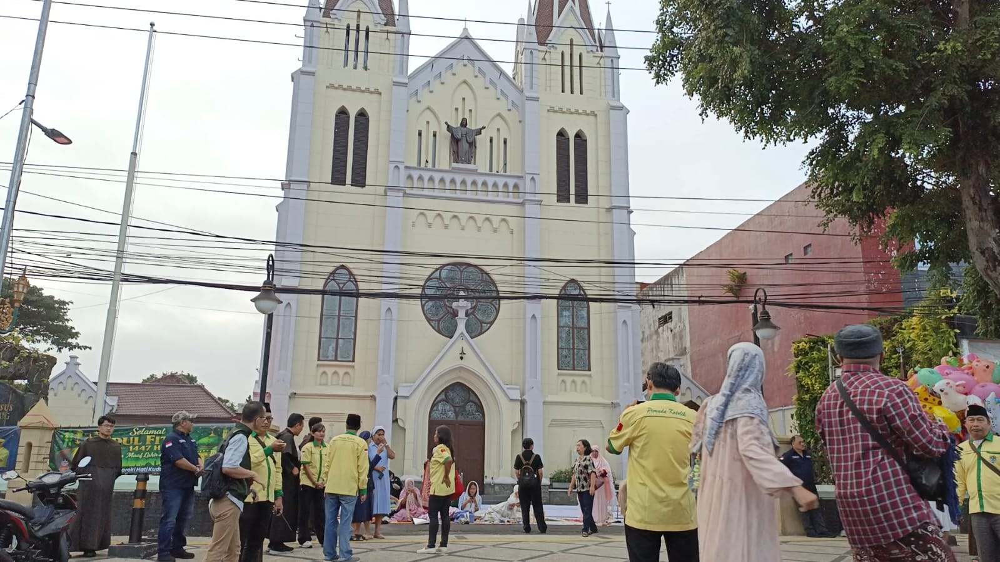

Membangun ruang dialog
Menghadirkan ruang perjumpaan yang terbuka untuk saling mengenal, mendengarkan, dan menghargai keberagaman agama serta kepercayaan.
Mengenal Komisi Hubungan Antar Agama dan Kepercayaan (HAAK) Keuskupan Malang sebagai ruang pelayanan, perjumpaan, dan dialog dalam semangat persaudaraan, saling menghormati, serta kehidupan yang rukun di tengah keberagaman.

Komisi Hubungan Antar Agama & Kepercayaan (HAAK) Keuskupan Malang hadir sebagai wadah resmi untuk membangun dialog, mempererat persaudaraan, dan memperkuat kerjasama lintas iman demi terciptanya harmoni dan keadilan di tengah keberagaman masyarakat.
Menghadirkan ruang perjumpaan yang terbuka untuk saling mengenal, mendengarkan, dan menghargai keberagaman agama serta kepercayaan.
Menumbuhkan sikap saling menghormati, kepedulian, dan semangat kebersamaan sebagai bagian dari kehidupan masyarakat yang rukun.
Membangun semangat kerja sama dan kepedulian melalui berbagai kegiatan yang memberikan manfaat bagi kehidupan bersama.
Membuka kesempatan untuk berbagi pengalaman, memahami perbedaan, dan membangun komunikasi yang dilandasi sikap saling menghormati.
Mendorong terciptanya kehidupan bersama yang damai, harmonis, dan saling menghargai di tengah masyarakat yang beragam.
Membangun kerja sama dengan berbagai pihak untuk menghadirkan kegiatan dan tindakan nyata yang bermanfaat bagi masyarakat.
HAAK adalah Komisi Hubungan Antar Agama dan Kepercayaan yang menjadi bagian dari pelayanan Keuskupan Malang dalam membangun hubungan, dialog, dan persaudaraan bersama berbagai agama dan kepercayaan.
HAAK memberikan perhatian pada perjumpaan lintas agama dan kepercayaan, dialog, kerukunan, persaudaraan, serta berbagai bentuk kerja sama untuk mendukung kehidupan bersama yang damai.
Dialog lintas agama dan kepercayaan merupakan ruang untuk saling mengenal, mendengarkan, memahami perbedaan, dan menemukan peluang untuk membangun hubungan yang baik.
Tidak. Perjumpaan dan pelayanan HAAK dapat hadir dalam berbagai bentuk, seperti silaturahmi, kegiatan bersama, refleksi, pendidikan, kegiatan sosial, serta kerja sama lintas komunitas.
Persaudaraan membantu masyarakat melihat perbedaan sebagai bagian dari kehidupan bersama, sekaligus membangun sikap saling menghormati, peduli, dan bekerja sama.
Keterlibatan masyarakat bergantung pada bentuk dan ketentuan masing-masing kegiatan. Informasi mengenai kegiatan tertentu dapat dilihat melalui informasi yang dipublikasikan pada portal ini.
Portal ini menyajikan berita, informasi kegiatan, artikel dan refleksi, dokumentasi, serta berbagai informasi mengenai perjumpaan dan kehidupan lintas agama dan kepercayaan.
Informasi mengenai kegiatan dapat diperoleh melalui berita, dokumentasi, dan informasi yang tersedia di portal, serta melalui kanal komunikasi resmi HAAK Keuskupan Malang apabila tersedia.
Tidak. Portal ini dirancang sebagai ruang informasi publik sehingga pengunjung dapat membaca berbagai informasi yang tersedia tanpa perlu membuat akun atau melakukan login.
Pengunjung dapat menggunakan informasi kontak yang tersedia pada halaman Kontak untuk menyampaikan pertanyaan, informasi, atau keperluan komunikasi lainnya.